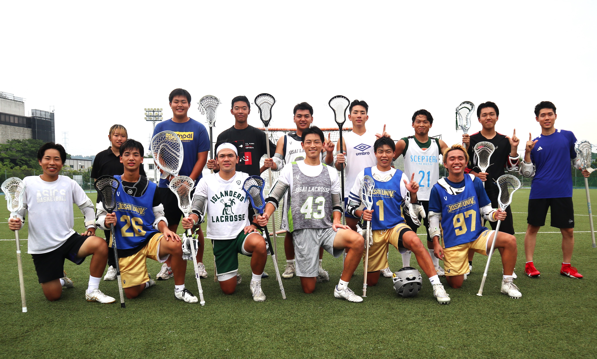
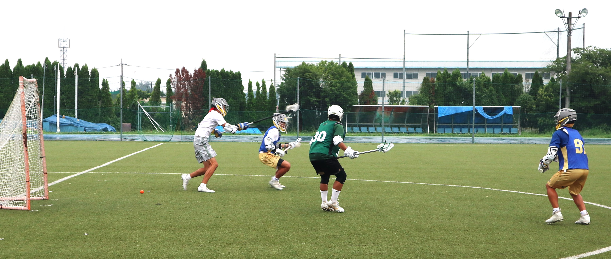

| 城西大学ラクロス部 -RHINOS- 【紹介ページ】 |
.jpg)
| HOME | TEAM | MEMBER | SCHEDULE |
多種多様な競技経験者によるワンチーム
-「愛」をスローガンに2部昇格をめざす-

城西ラクロスのスタートは2015年6月、チームのヘッドコーチを務める中澤秀行さんら当時のラクロス好きが集まって立ち上げたサークルでした。 高麗川横の土のグラウンドでの練習に始まり、2021年にようやく部に昇格。総合グラウンド内の人工芝で練習できるようになりましたが、他部との競合を避けるため、週4回の平日練習は午前7時から9時まで。 始発電車に乗って駆けつけているメンバーも少なくありません。
昨年から主将を務めているのは、附属城西高校の硬式野球部でレギュラーの中堅手だった山田航輝選手（経営学部4年）。 2021年の入学後、どの部活にも入らず、「物足りない」と感じ始めていた冬、友人がやっていたラクロスを知り、「大学で輝ける場所になるかも知れない」と入部しました。 多くの上級生がチームを引退、コロナ禍もあって先輩部員は1人だけ。翌年の新入生勧誘などで部員を増やし、ようやくラクロスができる10人を越える13人にまでになりました。 部員全員が大学でラクロスを始めています。野球、水泳、バスケットボール、剣道、アイスホッケーなどとその競技歴は多種多様。「人数は少ないものの、走る、投げる、打つなどそれぞれが得意なところでチームに貢献できる。 それがこのチームの強み」と山田主将は胸を張ります。

次期主将候補は西武台高校出身の近藤利毅選手（現代政策学部3年）。高校時代はサッカー部だったという近藤選手は「大学では新しいスポーツを」と城西ラクロスの門をたたきました。 「男子は大学から始める選手が多いのでスタートラインは一緒。自分の努力次第でレベルを上げることができるのがラクロスの魅力」と語る近藤選手は「チームは主体的に取り組むという意識が高い。 やる気、根性は他の大学には負けない。どうやってチームをまとめていけるかも日ごろ考えています」と付け加えました。
チームのスローガンは「愛」。山田主将は「人数が少ないうちのチームは一人ひとりの個の力はあるが、勝っていくにはチームワークが必要。 一人ひとりへのリスペクトをこめて、愛を持って戦っていこうというのがその狙い」と解説してくれました。リーグ戦は7月に始まり、11月まで続きます。 3部で戦う2年目のシーズン。昨年はあと1勝というところで、昇格戦を逃しました。山田主将は「昨年からメンバーはほぼ同じという強みはそのままに1年生4人の新戦力を加えて、2部昇格を果たしたい」と決意。 近藤選手は「まだ弱いカテゴリーでやっているので、今は練習場所も練習時間も限られている。いずれ1部まで行って、強豪団体として大学にも認められる存在になっていければ」と将来への望みを語りました。（城西大学ホームページより引用）
【外部リンク】
※画像をクリックすると外部ページにアクセスします。
公式Youtube.PNG)
|
|
|
|
|
公式Instagram.PNG)
|
|
|
|
|
公式X現在閉鎖中.PNG)
|
.PNG)